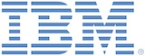

6th International Rule Challenge
The International RuleML2012@ECAI Challenge is one of the highlights of the RuleML2012 conference. The challenge is dedicated to practical experiences with rule-oriented applications. In particular, submissions of benchmarks/evaluations, demos, case studies/use cases, experience reports, best practice solutions (e.g. design patterns, reference architectures, models), rule-based implementations/tools/applications, demonstrations of engineering methods, implementations of rule standards (e.g. RuleML, RIF, SBVR, PRR, rule-based Event Processing languages, BPMN+rules, BPEL+rules,...), rules + industrial standards (e.g. XBRL, MISMO, Accord,...), and industrial problem statements are particularly encouraged.
This year we are proud to announce the direct involvement of IBM by IBM CAS France: 
The topics of the International RuleML2012@ECAI Challenge include (but they are NOT limited to) the following:
- Industrial rule-based applications includiong rule-based Web applications
- Demos related to the RuleML2012@ECAI Topics
- Extensions and implementations of rule standards: W3C RIF, RuleML, SBVR,...
- Editing environments and IDEs for Web rules
- Benchmarks and comparison results for rule engines
- Distributed rule bases and rule services
- Reports on industrial experience about rule systems
Previous challenge editions were in Ft Lauderdale, Florida (RuleML2011@BRF Challenge), in Washington, DC (RuleML2010Challenge), in Las Vegas, Nevada (RuleML2009Challenge) and Orlando, Florida (RuleML2008Challenge and RuleML2007Challenge).
RuleML2012Challenge is the first edition taking place in Europe.
6th International Rule Challenge Important Dates
Paper submission: May 25, 2012, extended to
June 27, 2012( )
Notification of acceptance/rejection: July 15, 2012
Camera-ready copy due: July 31, 2012
RuleML Challenge date: TBA
6th International Rule Challenge Submission guidelines
Submissions to the International RuleML2012@ECAI Challenge consist of:
- An open-source or commercial demo
- A demo paper, using LNCS format, describing research, implementation, and technical details of your submission.
Submit both the demo and the paper to https://www.easychair.org/conferences/?conf=ruleml2012challenge. Would you have an online demo please provide a URL in the description paper.
If you have no EasyChair account, then you should sign up for an account at https://www.easychair.org/account/signup.cgi?conf=ruleml2012challenge
The challenge demo papers are published by CEUR Workshop Proceedings ( Volume 874) of RuleML.
International Rule Challenge Steering Committee
Patrick Albert, IBM France
Francois Briant, IBM CAS France
6th International Rule Challenge Chairs
Hassan Ait-Kaci, IBM Canada
Yuh-Jong Hu, National Chengchi University, Taiwan
Dumitru Roman, SINTEF, NO